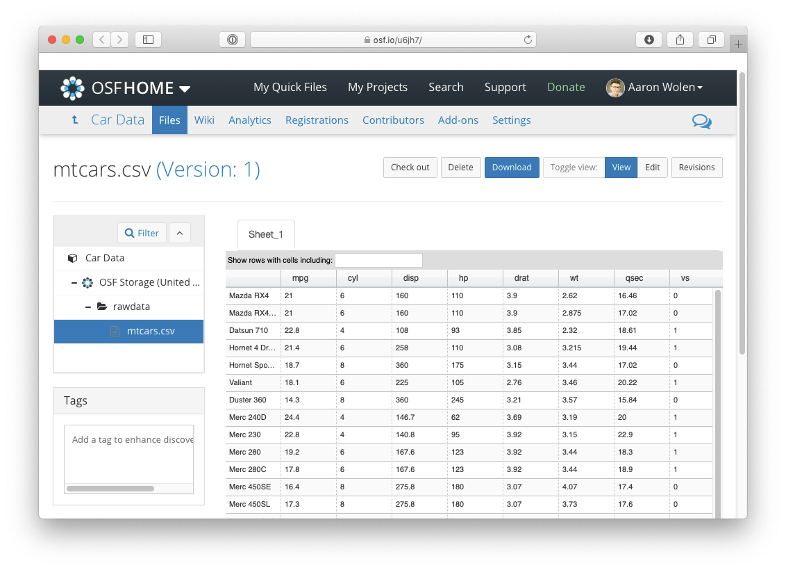

Overview
osfr provides a suite of functions for interacting with the Open Science Framework (OSF).
What is OSF?
OSF is a free and open source project management repository designed to support researchers across their entire project lifecycle. The service includes unlimited cloud storage and file version history, providing a centralized location for all your research materials that can be kept private, shared with select collaborators, or made publicly available with citable DOIs.
Installation
You can install the current release of osfr from CRAN (recommended):
install.packages("osfr")Or the development version from GitHub with the remotes package:
# install.packages("remotes")
remotes::install_github("ropensci/osfr")Usage Examples
Note: You need to setup an OSF personal access token (PAT) to use osfr to manage projects or upload files.
Accessing Open Research Materials
Many researchers use OSF to archive and share their work. You can use osfr to explore publicly accessible projects and download the associated files—all you need to get started is the project’s URL or GUID (global unique identifier).
Every user, project, component, and file on OSF is assigned a GUID that is embedded in the corresponding entity’s URL. For example, you can access the main OSF project for the Cancer Reproducibility Project at https://osf.io/e81xl/. The GUID for this project is e81xl.
We can then use osfr to retrieve this project and load it into R by providing the GUID:
library(osfr)
cr_project <- osf_retrieve_node("e81xl")
cr_project
#> # A tibble: 1 x 3
#> name id meta
#> <chr> <chr> <list>
#> 1 Reproducibility Project: Cancer Biology e81xl <named list [3]>This returns an osf_tbl object with a single row representing the retrieved project. Let’s list the files that have been uploaded to this project.
osf_ls_files(cr_project)
#> # A tibble: 4 x 3
#> name id meta
#> <chr> <chr> <list>
#> 1 Adjustment of 50 studies to 37 studies.… 565602398c5e4a3877d72… <named list […
#> 2 papers_and_keywords.xlsx 553e671b8c5e4a219919e… <named list […
#> 3 Full_dataset_of_papers_formatted.xls 553e671b8c5e4a219919e… <named list […
#> 4 METHOD_to_select_papers.txt 553e671b8c5e4a219919e… <named list […This returns another osf_tbl with 1 row for each of the files and directories in the project. We can examine any of these files directly on OSF with osf_open(), which opens the corresponding file’s view in your default browser.
This project contains 2 components: Replication Studies and Data collection and publishing guidelines. We can list these components with osfr using osf_ls_nodes().
osf_ls_nodes(cr_project)
#> # A tibble: 2 x 3
#> name id meta
#> <chr> <chr> <list>
#> 1 Replication Studies p7ayb <named list [3]>
#> 2 Data collection and publishing guidelines a5imq <named list [3]>osfr is compatible with the pipe operator and dplyr, providing a powerful set of tools for working with osf_tbls. Here, we’re listing the sub-components nested within the Replication Studies component, filtering for a specific study (Study 19) and then listing the files uploaded to that study’s component.
library(dplyr)
cr_project %>%
osf_ls_nodes() %>%
filter(name == "Replication Studies") %>%
osf_ls_nodes(pattern = "Study 19") %>%
osf_ls_files()
#> # A tibble: 6 x 3
#> name id meta
#> <chr> <chr> <list>
#> 1 Replication_Study_19.docx 57c9e8ed594d9001e7a24… <named list [3…
#> 2 Replication_Study_19.Rmd 578e2b23594d9001f4816… <named list [3…
#> 3 Replication_Study_19_track_changes.docx 581a27b76c613b0223322… <named list [3…
#> 4 Replication_Study_19_track_changes_2.d… 58714d46594d9001f801f… <named list [3…
#> 5 Response_letter_Replication_Study_19.d… 58755747b83f6901ff066… <named list [3…
#> 6 Study_19_Correction_Letter.docx 5a56569125719b000ff28… <named list [3…We could continue this pattern of exploration and even download local copies of project files using osf_download(). Or, if you come across a publication that directly references a file’s OSF URL, you could quickly download it to your project directory by providing the URL or simply the GUID:
osf_retrieve_file("https://osf.io/btgx3/") %>%
osf_download()
#> # A tibble: 1 x 4
#> name id local_path meta
#> <chr> <chr> <chr> <list>
#> 1 Study_19_Figure_1.… 5751d71d9ad5a1020793… ./Study_19_Figure_1.… <named list […Managing Projects
You can use osfr to create projects, add sub-components or directories, and upload files. See Getting Started to learn more about building projects with osfr, but here is a quick example in which we:
- Create a new project called Motor Trend Car Road Tests
- Create a sub-component called Car Data
- Create a directory named rawdata
- Upload a file (
mtcars.csv) to the new directory - Open the uploaded file on OSF
# create an external data file
write.csv(mtcars, "mtcars.csv")
osf_create_project(title = "Motor Trend Car Road Tests") %>%
osf_create_component("Car Data") %>%
osf_mkdir("rawdata") %>%
osf_upload("mtcars.csv") %>%
osf_open()
Details on osf_tbls
There are 3 main types of OSF entities that osfr can work with:
- nodes: both projects and components (i.e., sub-projects) are referred to as nodes
- files: this includes both files and folders stored on OSF
- users: individuals with OSF accounts
osfr represents these entities within osf_tbls—specialized data frames built on the tibble class that provide useful information about the entities like their name and unique id for users, and API data in the meta column that’s necessary for osfr’s internal functions. Otherwise, they’re just data.frames and can be manipulated using standard functions from base R or dplyr.
Acknowledgments
OSF is developed by the Center for Open Science in Charlottesville, VA.
The original version of osfr was developed by Chris Chartgerink and further developed by Brian Richards and Ryan Hafen. The current version was developed by Aaron Wolen and is heavily inspired by Jennifer Bryan and Lucy D’Agostino McGowan’s excellent googledrive package. Seriously, we borrowed a lot of great ideas from them. Other important resources include http testing by Scott Chamberlain and R Packages by Hadley Wickham. Development was also greatly facilitated by OSF’s excellent API documentation.
Big thanks to Rusty Speidel for designing our logo and Tim Errington for his feedback during development.
Contributing
Check out the Contributing Guidelines to get started with osfr development and note that by contributing to this project, you agree to abide by the terms outlined in the Contributor Code of Conduct.